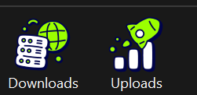
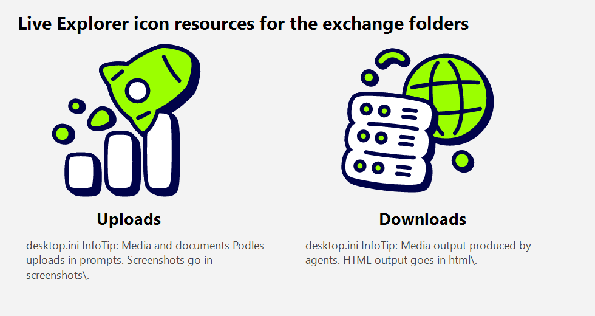

Explorer is showing the custom icons on the live exchange folders

Crop of File Explorer opened at C:\Users\ayden\Documents\PodleFleet. Downloads and Uploads render their desktop.ini icons, not the default folder glyph.

The 256px IconResource images desktop.ini points at, with the InfoTip Explorer shows for each folder.